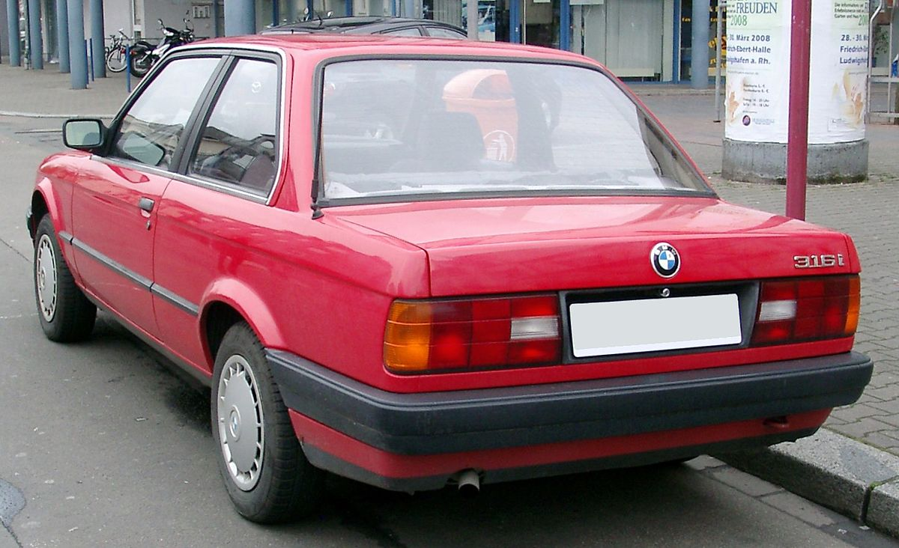
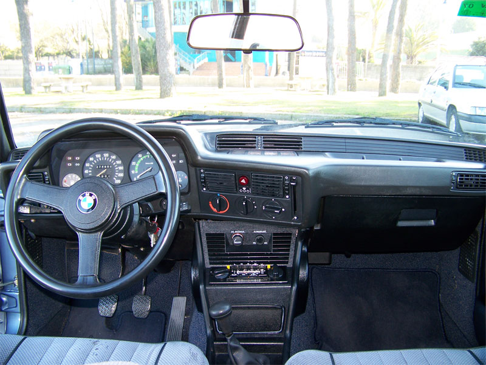
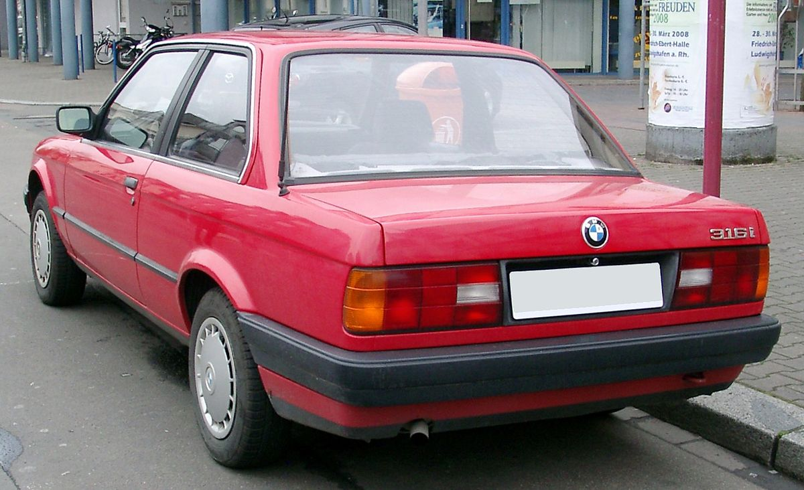
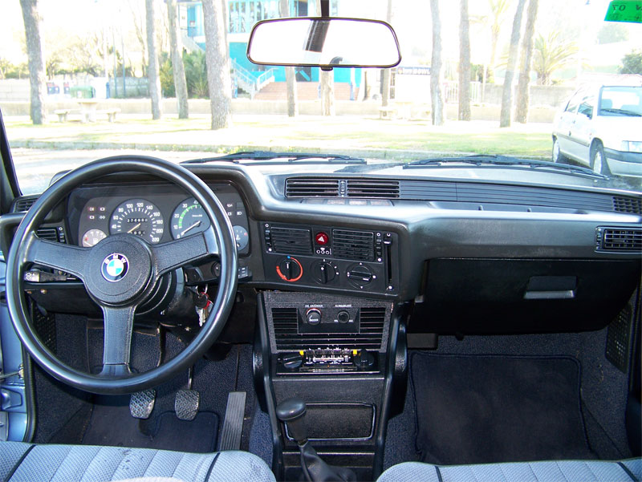

BMW E30
The second-generation 3 Series (1982 - 1994)
 



Car Specifications
- Engine Options: 1.6L Inline-4, 1.8L Inline-4, 2.0L Inline-6, 2.3L Inline-6, 2.5L Inline-6, 2.5L Inline-4 (M3)
- Power: 90 - 238 hp
- Torque: 130 - 240 Nm
- Transmission: 5-speed manual, 4-speed automatic
- Top Speed: 235 km/h (146 mph)
- 0-100 km/h: 6.5 seconds (M3)
- Fuel Economy: 7.5 - 14.0 L/100 km (38 - 17 mpg)
- Production Years: 1982 - 1994
- Body Style: 2-door Coupe, 4-door Sedan, Convertible, Touring (Wagon)
- Drive Type: Rear-Wheel Drive
- Weight: 1,080 - 1,300 kg
About the BMW E30
The BMW E30, a successor to the E21, expanded the 3 Series lineup with a variety of body styles, enhanced engineering, and the introduction of the legendary M3 model. The E30 became synonymous with driving pleasure and versatility.
With its balanced weight distribution, advanced suspension, and timeless design, the E30 remains a classic among BMW enthusiasts worldwide.
Image Gallery


Key Features
- Performance: Versatile engine lineup, including the high-performance M3.
- Design: Iconic boxy shape with distinctive BMW styling cues.
- Heritage: A benchmark in motorsport and a favorite among car enthusiasts.
Technical Information
The BMW E30 lineup offered a range of engines and body styles to cater to diverse preferences:
Engine Codes and Iterations
- M10: 1.6L-1.8L Inline-4, used in early 316 and 318i models
- M20: 2.0L-2.7L Inline-6, used in 320i, 323i, 325i
- S14: 2.3L Inline-4, up to 238 hp, used in the M3
Conclusion
The BMW E30 remains a beloved icon, blending practicality, performance, and timeless design. Its legacy continues to thrive in the automotive community as a symbol of driving excellence.